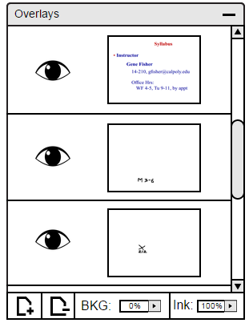

When a new layer is made, the default visibility is for visible. To turn off the layer visibility, click on the open eye next to the layer you want to turn off as shown in Figure 5.

Figure 5: Main view.
Figure 2: Invisible Layer view.
Figure 3: Layer/Slide Interaction before Deletion.
Figure 4: Layer/Slide Interaction after Deletion.